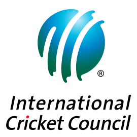

WORLD
of
CRICKET

WORLD
of
CRICKET
The sport of cricket has a known history beginning in the late 16th century. Having originated in south-east England, it became the country's national sport in the 18th century and has developed globally in the 19th and 20th centuries. International matches have been played since 1844 and Test cricket began, retrospectively recognised, in 1877. Cricket is the world's second most popular spectator sport

Sir Donald George Bradman, AC (27 August 1908 – 25 February 2001), often referred to as "The Don", was an Australian international cricketer, widely acknowledged as the greatest batsman of all time. Bradman's career Test batting average of 99.94 has been cited as the greatest achievement by any sportsman in any major sport
The International Cricket Council (ICC) is the global governing body of cricket. It was founded as the Imperial Cricket Conference in 1909 by representatives from Australia, England and South Africa. It was renamed as the International Cricket Conference in 1965, and took up its current name in 1989. It organises world championship events such as Cricket World Cup, Women's Cricket World Cup, ICC T20 World Cup, ICC Women's T20 World Cup, ICC Champions Trophy and Under-19 Cricket World Cup.
Sachin Ramesh Tendulkar; born 24 April 1973) is an Indian former international cricketer and a former captain of the Indian national team. He is widely regarded as one of the greatest batsmen in the history of cricket. He is the highest run scorer of all time in International cricket. Tendulkar took up cricket at the age of eleven, made his Test debut on 15 November 1989 against Pakistan in Karachi at the age of sixteen, and went on to represent Mumbai domestically and India internationally for close to twenty-four years. He is the only player to have scored one hundred international centuries, the first batsman to score a double century in an ODI, the holder of the record for the most runs in both Test and ODI, and the only player to complete more than 30,000 runs in international cricket.[5]
Formats of Game
A One Day International (ODI) is a form of limited overs cricket, played between two teams with international status, in which each team faces a fixed number of overs, usually 50. The Cricket World Cup, generally held every four years, is played in this format. One Day International matches are also called Limited Overs Internationals (LOI), although this generic term may also refer to Twenty20 International matches. They are major matches and considered the highest standard of List A, limited overs competition.
Twenty-20 (often abbreviated to T20), is a shortened format of cricket. At the professional level, it was originally introduced by the England and Wales Cricket Board (ECB) in 2003 for the inter-county competition. In a Twenty20 game the two teams have a single innings each, which is restricted to a maximum of 20 overs. Together with first-class and List A cricket, Twenty20 is one of the three current forms of cricket recognised by the International Cricket Council (ICC
Test cricket is the form of the sport of cricket with the longest match duration, and is considered the game's highest standard. Test matches are played between national representative teams that have been granted Test status, as determined and conferred by the International Cricket Council (ICC). The term Test stems from the fact that the long, gruelling matches are mentally and physically testing. Two teams of 11 players each play a four-innings match, which may last up to five days (or longer in some historical cases).